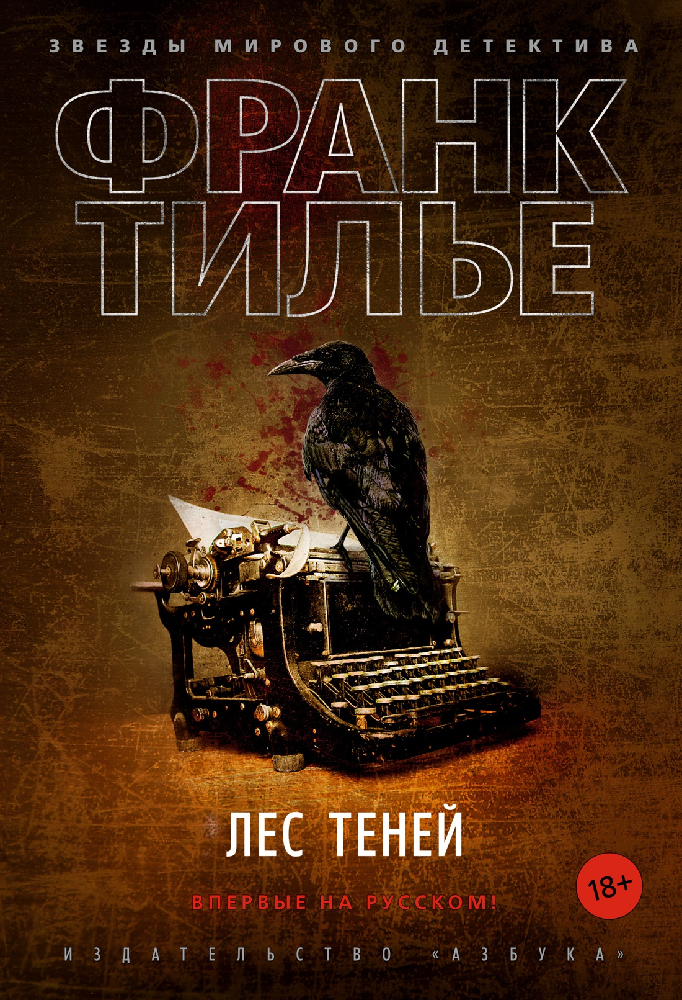

Как известно, ненависть порождает ненависть, насилие порождает насилие. Но кто бы мог предположить, что на почве давних событий в далеких краях возникнет такой клубок запутанных человеческих страстей и безумств, как в романе Франка Тилье «Переломы»!Алиса сознает, что с ней что-то не в порядке, в памяти то и дело возникают черные дыры. Лечение у психиатра Люка Грэхема, казалось бы, должно привести к выздоровлению. Однако вокруг молодой женщины множатся странные события. Например, как объяснить, что фотография ее сестры-близнеца, умершей десять лет назад, попадала в руки беженца, скрывающегося от властей. Как понять, почему ее собственный отец нападал на нее, а теперь утверждает, что пытался покончить с собой; откуда в ванной взялась окровавленная блузка; и наконец, причем тут совершенно неподвижный голый человек, найденный на автобусной остановке? Неужто это погружение в безумие?..
Еще о книге
«Открывая «Переломы», знайте, что бессонная ночь вам обеспечена. Виртуозно манипулируя вашим вниманием, Тилье иcкусно плетет свою паутину, и рано или поздно вы сами становитесь его жертвой…», — Le Point«Франк Тилье, как Стивен Кинг и Жан-Кристоф Гранже, обожаемые им авторы, любит помещать своих героев в экстремальные ситуации, которые углубляют проблемы их собственной психики», — Маша Сери, Le monde des livres«Франк Тилье заставляет в мгновение ока переходить от ужаса к отчаянию, от отчаяния к надежде», — Le Parisien«В умении строить детективный сюжет на основе научно достоверных фактов Тилье неподражаем. Ему веришь, и это пугает больше всего…», — Vol de Nuit
Цитаты из книги
- "— По поводу свободы существует одна интересная мысль: пока не потеряешь ее, не понимаешь, что она значит."
- "— Мы все от чего-то зависимы. Зависимость — это в каком-то роде способ избавиться от своих призраков."
- "Если есть на свете два места, где никогда не будет пусто, так это больницы и кладбища..."
- "Прошлое остается неизменным и продолжает притягивать к себе словно магнит."
- "Когда речь идет о психиатрии, всегда ищут связь с детством."
Вам может быть интересно
-
Сандроне Дациери "Убить отца"
-
Франк Тилье "Последняя рукопись"
-
Франк Тилье "Медовый траур"
-
Франк Тилье "Лес теней"
 -
Сандроне Дациери "Жил-был раз, жил-был два"
Франк Тилье
Франк Тилье – французский автор триллеров и детективов. На русском языке опубликованы 19 романов Тилье.Франк Тилье родился в 1973 г. в городе Аннеси во Франции. Сейчас живет в Па-де-Кале. Дипломированный специалист по информатике и вычислительной технике, по специальности он проработал чуть больше десяти лет, пока не решил отдать предпочтение литературе.Пристрастием к триллерам, детективам и ужасам Франк отличался с детства. Любимым автором у тогда еще мальчика был Стивен Кинг. Позже Тилье открыл для себя творчество Гранже. Омажи к творчеству любимых писателей иногда встречаются в его книгах – томик Гранже, лежащий на ночном столике, или полка книг Кинга, оказавшаяся в библиотеке одного из героев романа.
Книги Франка Тилье
Свою первую книгу «Адский поезд для Красного Ангела» Тилье опубликовал в небольшом издательстве в 2003 г. Но имя автора оставалось неизвестным, пока не вышел триллер «Комната мертвых», отмеченный наградой фестиваля детективов в Лионе (Quais du Polar), а позже получивший премию SNCF в номинации «Лучший детектив». В 2007 году вышел одноименный фильм, снятый по роману, главную роль сыграла Мелани Лоран. С этого момента имя Тилье стало эталоном качественного детектива. Став лауреатом премии Étoiles газеты Parisien-Aujourd’hui en France за лучший детектив 2014 г. («Страх»), он еще раз подтвердил статус мастера жанра.Лучшие книги Тилье объединены общими героями, их стоит читать по порядку. Первый цикл, в который входят романы «Адский поезд для Красного Ангела», «Медовый траур» и «Атомка», посвящен комиссару Франку Шарко. Еще один следователь, ставший главным персонажем в триллерах Тилье – эксцентричная Люси Энебель. Ее расследованиям посвящены книги «Комната мертвых», «Фантомная память» — их тоже стоит читать по порядку, чтобы понять суть.Впервые пути двух детективов пересекаются в романе «Синдром Е», и с этой истории начинается цикл «Расследование ведут комиссар Шарко и Люси Энебель». Вместе герои появляются еще в нескольких книгах – «GATACA, или Проект “Феникс”», «Атомка», «Страх», «Пандемия», «Шарко». Список книг Франка Тилье, которые можно читать в любом порядке, — «Последняя рукопись», «Лес теней», «Лента Мебиуса», «Сновидение», «Головоломка», «Головокружение».Сегодня Франк Тилье – один из самых популярных французских авторов детективов, успешно выступающий и в роли сценариста. В соавторстве с Николя Такианом он написал диалоги для фильма Пьера Изоара «Алекс Гюго, смерть и прекрасная жизнь», работал над сценарием детективного сериала и адаптацией одного из своих триллеров в формат комиксов.Интрига, умение выстроить захватывающий «нуарный» сюжет на основе научно-доказанных фактов, глубокий психоанализ, неординарные, экстремальные и держащие в напряжении ситуации, в которых оказываются герои, – то, что поставило Франка Тилье на один пьедестал с Жан-Кристофом Гранже во Франции и сделало его книги популярными среди читателей по всему миру.Его романы переведены на десятки языков, а критики единодушно удивляются, откуда Франк черпает вдохновение и как придумывает сюжеты.
Входит в подборку 10 лучших триллеров и книг ужасов